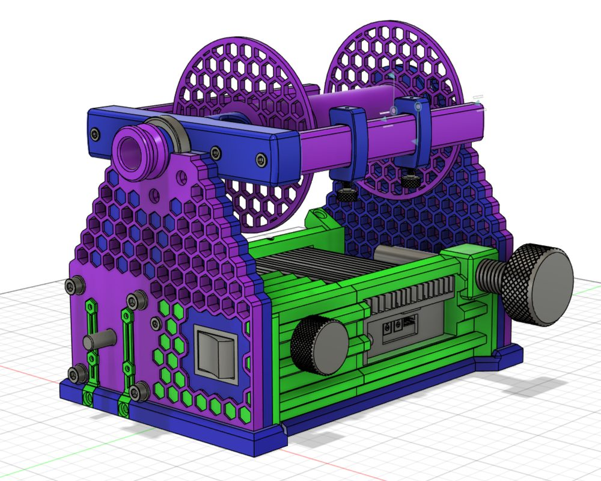
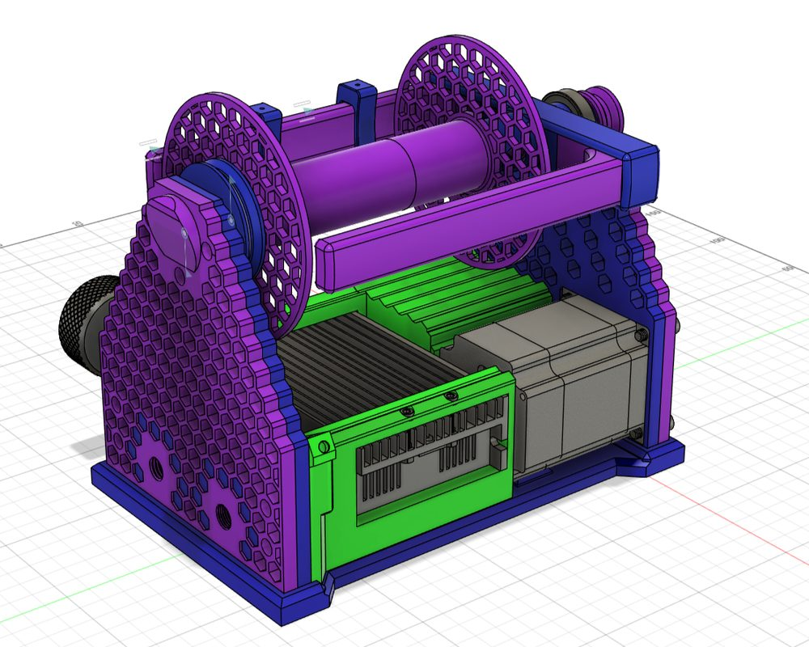
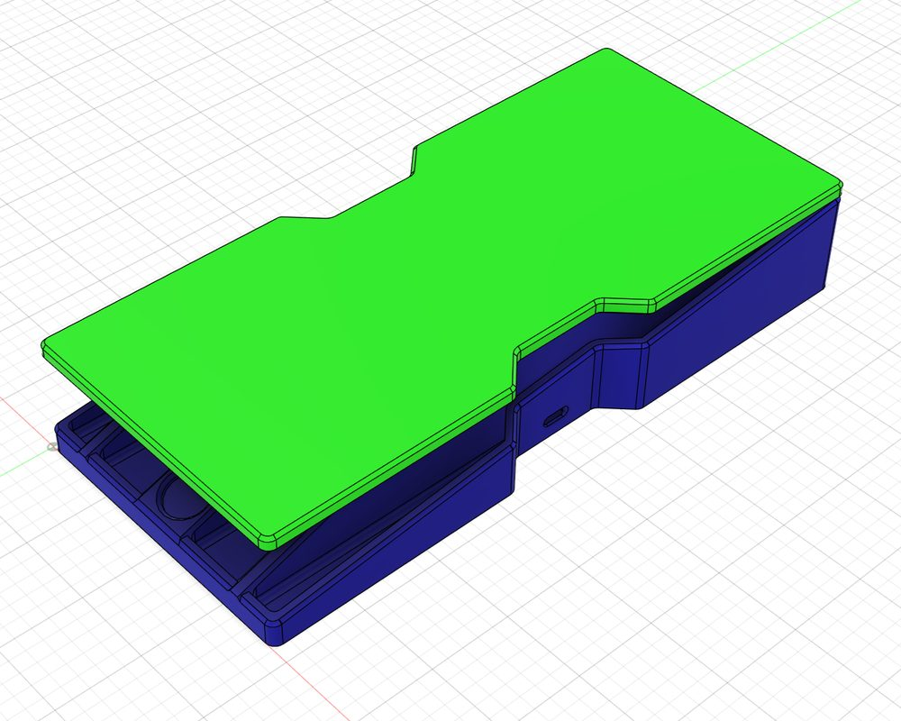
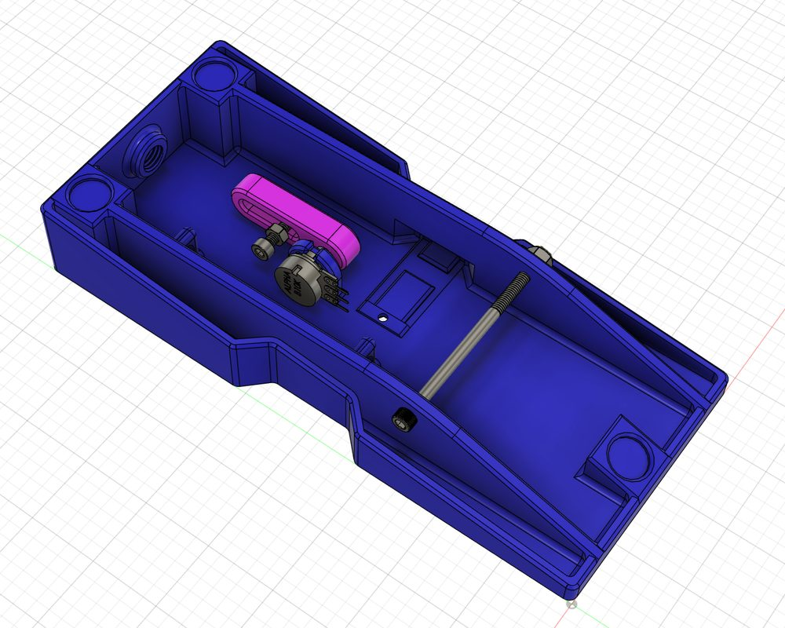

Clotho eSpinner
Released Aug 2026An electric spinning wheel built around a 94 W closed-loop brushless motor, with a 3D-printed frame, a foot pedal for speed control and a tool-free flyer and bobbin change. Parts cost about $200.




CAD renders from the published STEP model.
Specs
- Motor
57BSD76 BLDC, NEMA 23 frame, 94 W, 24 V - Driver
BLD-510B closed-loop BLDC controller - Speed control
Panel knob, or foot pedal via a TRS jack - Flyer
Supported at both ends, tool-free change
Build notes
- Cheap 8 mm rod is usually sheared to length, which squashes the ends. Chamfer and sand them until the bearings slide on and off.
- Print the structural parts in PETG. PLA doesn't hold up to the heat and load from this motor.
- PETG softens around 80 °C (175 °F). This shouldn't need saying, but one Clotho has already melted in the Arizona sun. If you live somewhere that hot, print it in ASA.
- The driver ships set to full speed and current. Turn both trim pots all the way down before first power-up, then bring them up.
- Plugging in the foot pedal disconnects the panel knob. A Pro Micro reads the pedal and sends PWM to the driver; calibrate it over serial.
Files
Parts list with sources, full STEP model, 8 printable 3MF assemblies, build and setup instructions, and foot pedal firmware. Licensed CC BY-SA.
Get the files on Printables → View on GitHub